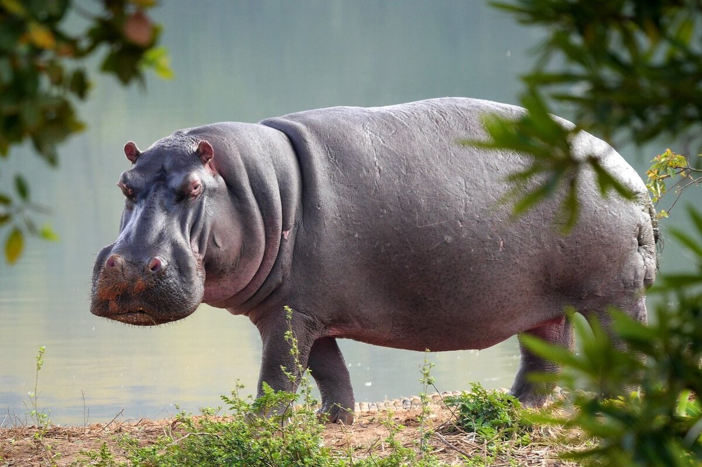
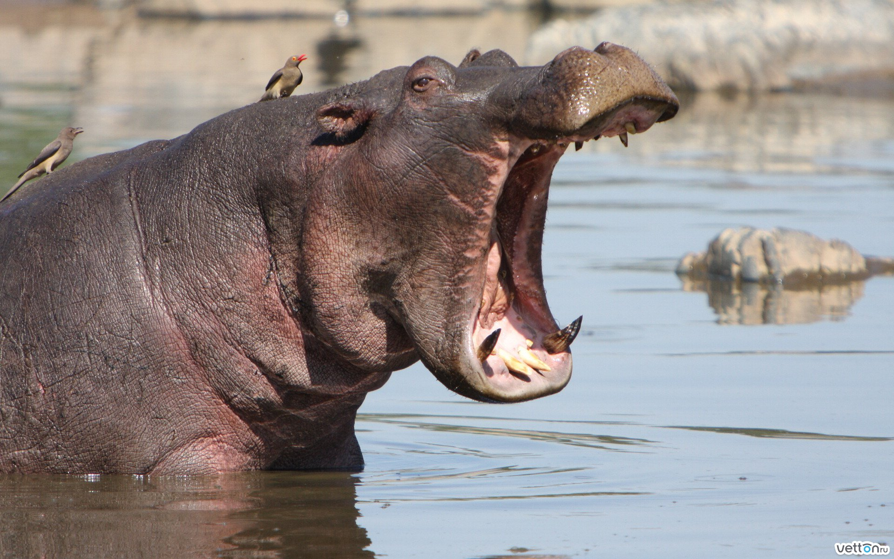
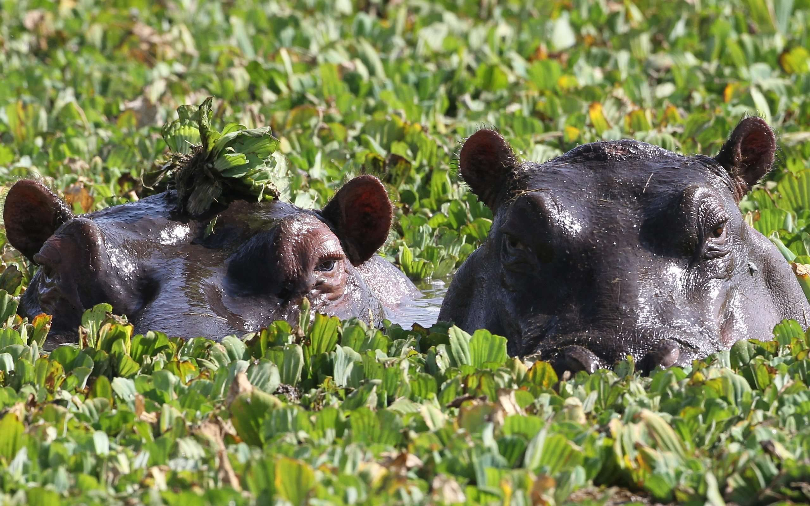
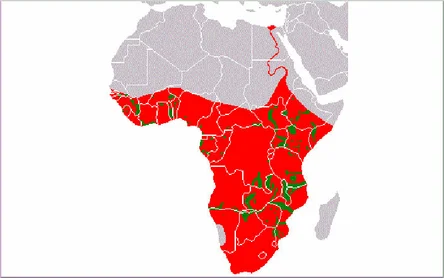

Обыкновенный бегемот, иначе называемый гиппопотамом, является полуводным крупным млекопитающим.
Принадлежит к семейству бегемотовые. По размерам бегемоты считаются вторыми после слонов крупнейшими
сухопутными животными, проживающими на земле.
Описание бегемота
Бегемот или гиппопотам
Взрослые особи крупные, вырастают до 3,2 тонн. С длиной тела до 500 см вместе с хвостом в 35 см.
Высота взрослых особей в холке составляет примерно полтора метра. Цвет кожи бегемотов
варьируется от серо-фиолетового до серо-зеленого. Вокруг глаз и ушек небольшие
розовато-коричневатые области. Тело млекопитающих, как и у китов, практически полностью лысое.
На голове и хвосте шерсти нет, однако по всему телу располагаются редкие небольшие тонкие
шерстинки.

Челюсть бегемота
Мощные челюсти гиппопотамов раскрываются под углом до 150 градусов. Во рту у животного крупные и
острые клыки и резцы. Клыки могут вырастать до 50 см, а остальные зубы – до 40. Клыки постоянно
затачиваются друг о друга во время принятия пищи.

Каковы размеры?
Различия между самцом и самкой внешне у молодых особей практически незаметны. Особи сильного
пола лишь весят на 200 кг больше самок, что не так выделяется из-за веса в несколько тонн.
Однако самцы растут постоянно, тогда как самки перестают расти в 25 лет. За всю свою жизнь самцы
бегемотов вырастают величиной до пяти метров, а самки – до 3,5. Самый крупный самец в истории
весил 4,5 тонны. Челюсти самцов больше и более развиты, зубы также крупнее.

Интересный факт: бегемоты могут нырять, задерживая дыхание до 10 минут.
Чем отличается бегемот от гиппопотама?
Латинское название бегемотов было позаимствовано из
древнегреческого, в переводе с которого Hippopotamus означает «речная лошадь». Название бегемоты
получили из-за того, что жили в реках и издавали схожие с конным ржанием звуки. В странах СНГ и
России закрепилось название «Бегемот», взятое из книги Иова и обозначающее демона плотских
желаний. Таким образом, двумя названиями называют одно и то же животное. Бегемот и гиппопотам
это одно и тоже.
Где обитает бегемот?
Парнокопытное животное в основном проживает в воде, изредка выходя на поверхность за пропитанием. Раньше бегемотов было много, их популяция процветала в Африке и Месопотамии. До засухи в пустыне Сахара также было много этих существ. Во времена Древней Греции животные проживали и в Северо-Западной Африке, где сейчас расположены государства Марокко и Алжир. В Древнем Египте также были бегемоты, которые жили в дельте Нила. Полное исчезновение бегемотов из Египта датируется началом XIX века.

Интересный факт: бегемоты считаются самыми опасными животными Африки. Они способны отбить любые нападения и защитить стадо от любой угрозы со стороны.
{kind=link}
{kind=link}
{kind=link}
{kind=link}
{kind=link}
{kind=link}
{kind=link}
{kind=link}